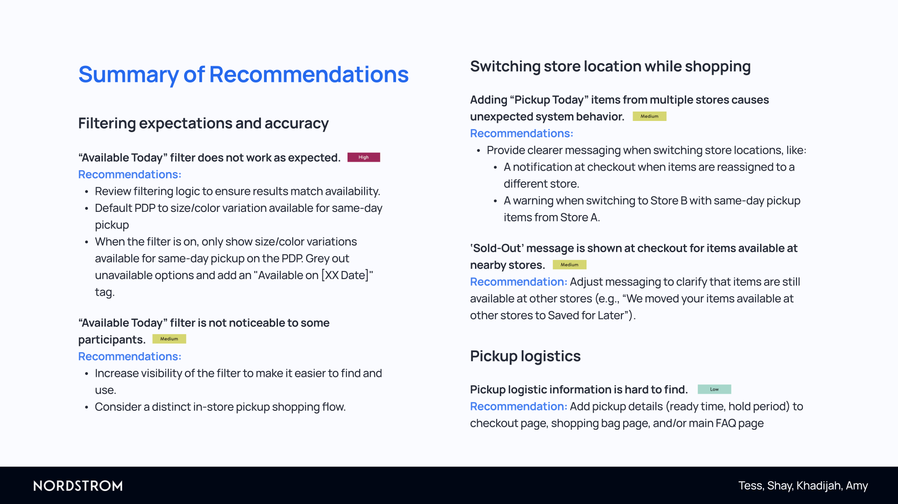
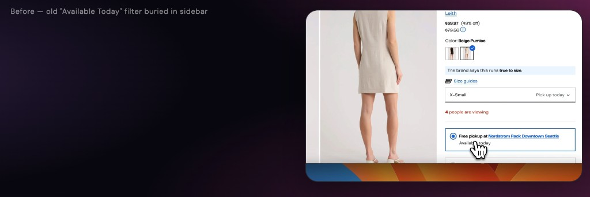

UX Research · Usability Testing · BOPIS
Buy Online, Pick Up in Store · UX Researcher · April 2025
Key metrics at a glance
- 8 Participants from 31 screener responses
- 82% Overall task success across 3 scenarios
- 10.6 Avg. size/color clicks before finding an eligible pickup shoe
- 5 Distinct usability issues across 3 severity levels
Background & objectives
Nordstrom Rack's Buy Online & Pick Up in Store (BOPIS) service lets customers purchase items online for same or next-day in-store pickup. The feature benefits both sides: shoppers get items faster without paying shipping, and Nordstrom drives in-store foot traffic that often leads to additional purchases.
Despite this mutual value proposition, there was no clear picture of how usable the experience actually was. Our team conducted a moderated usability study to identify the key pain points preventing customers from successfully completing BOPIS purchases on the Nordstrom Rack desktop website.
Research objective
Identify the key pain points preventing Nordstrom Rack customers from successfully finding and purchasing same or next-day pickup items — and surface actionable recommendations to improve the experience.
Research questions
- How easily and successfully can users navigate the Nordstrom Rack desktop website to find and purchase same or next-day pickup items?
- Do users understand the difference between same-day pickup and other fulfillment options (e.g. shipping)?
- How easily can users purchase same or next-day pickup items available at different store locations?
- What key pain points are preventing users from successfully completing a purchase without confusion?
- How clear is the information around item availability and pickup locations?
Research design & process
Recruitment
We distributed a screener survey through social networks including Slack and received 31 responses. We recruited 8 participants who met all of the following criteria:
- Live within driving distance of a Nordstrom Rack store offering "available today" pickup
- Shop online for clothing, makeup, or home goods at least three times per year
- Do not work in retail or as UX researchers (to avoid familiarity bias)
- Over the age of 18
Final sample: 7 female, 1 male. We sought a broad demographic range, acknowledging upfront that the sample would skew toward female participants.
Study format
Moderated usability sessions via Zoom using the Think Aloud Protocol, with one moderator and one notetaker per session. Sessions were screen-recorded with participant consent. Each session included a pre-test interview (to verify screener data and understand shopping habits), three task-based scenarios, and a post-test questionnaire.
Task scenarios
- Find a bag available for same-day in-store pickup, add to bag, and proceed to checkout.
- Find a pair of shoes available for same-day pickup at a different store location, add to bag, and check out.
- Find information on how long Nordstrom Rack will hold purchased in-store pickup items.
Analysis & severity ratings
After completing all sessions, we analyzed notes, recordings, and transcripts to identify recurring behavioral patterns. We adopted the Nordstrom UX team's severity framework to prioritize findings:
- High — prevents completion of a task
- Medium — causes significant delay, frustration, or added task time
- Low — has minor effect on usability or user experience
Participant BOPIS background
6 of 8 participants had previously used Buy Online, Pick Up in Store at some retailer. Only 1 had used Nordstrom Rack's specific BOPIS service. Top stated reasons for using BOPIS generally: getting items faster than shipping, convenience of reserving products without searching in-store, discounts exclusive to in-store pickup, and added security for expensive purchases.
This context mattered: participants arrived with established BOPIS mental models from other retailers, which shaped their expectations — and their confusion — throughout sessions.

Findings
We identified one area where the experience performed well and five distinct usability issues across three themes: filtering accuracy, multi-store checkout behavior, and pickup logistics discoverability.
What's working well
Ease of changing store location. Store names appear as hyperlinks wherever they're shown on the site, making it easy for shoppers to quickly switch locations. Participants noticed and appreciated this pattern.
"I think it's nice that every time the store name was shown it was linked, so you could quickly change the store location if you wanted to."
Familiar, clear site layout. The overall site architecture matched participants' existing e-commerce mental models. Navigation to product categories, adding items to the bag, and proceeding to checkout felt intuitive. The study's overall task success rate was 82%.
"The website is clear and easy for me to understand, and the process of buying these things is familiar. I'm very familiar with this process because it works similarly to other retail websites."
Issues & evidence
"Available Today" filter doesn't accurately reflect size-level availability · Severity: High
The filter operates at the product level, not the size level. A shoe appears in results as long as any size or color variation is available for same-day pickup — even if the shopper's selected size is entirely unavailable. Participants wasted significant effort clicking through products only to discover nothing in their size was actually eligible.
A compounding issue: when "Available Today" and a size filter are applied together, some results appear that have no colors available in that size for same or next-day pickup — a direct contradiction of what the filter implies.
- 7 of 8 participants applied the "Available today" filter
- 4 of 8 also applied a size filter
- Participants checked an average of 10.6 size/color combinations before finding an eligible shoe
- 3 of 8 participants tried to give up on the task 1–3 times due to the filters appearing broken
"I did filter by 'available today' and the size, but the filters did not work."
"Oh I finally got it, so only the size with the 'Pick up tmr' label is truly available?"

Participants miss when fulfillment silently switches from "pickup" to "ship to store" · Severity: High
On the product detail page, selecting a size or color that isn't available for same-day pickup causes the fulfillment method to change from "Free pickup" to "Free ship to store." This UI change is subtle and easy to miss, especially when a participant is focused on selecting their size.
- 4 of 8 participants added a "ship to store" item to their bag believing it was available for same-day pickup
"It says 'free pick up', but as soon as I select a size, it changes to 'free ship to store'. That's a little annoying."
"Well, the filter says 'available today' so I thought all the items here would be available for pickup by today or tomorrow. I guess 'available today' means it's just purchasable today. Then how can I filter for items that are available for pickup today or tomorrow? I don't think there's a filter for that."
Adding pickup items from multiple stores causes silent, confusing reassignment at checkout · Severity: Medium
When a shopper adds pickup items from Store A, switches store location, then adds items from Store B, the system consolidates all items under Store B at checkout. If Store A items aren't available for same-day pickup at Store B, their fulfillment method changes — but this happens without a clear, proactive notification.
- 5 of 8 participants expected to check out from multiple stores in a single transaction
- All 8 participants expressed confusion or annoyance when "Available Today" items became unavailable at checkout
- 5 of 8 noticed the store switch on their own at checkout; 3 of 8 did not notice and had to be prompted
When both items are available at Store B, the consolidation behavior is actually well-received — participants appreciated not having to make multiple trips. The problem is specifically the silent fulfillment downgrade with no warning.
"Oh no! The bag cannot be picked up by tomorrow anymore. I didn't notice that!"
"Oh...so it says I am picking both of these items up at the NR in Bellevue. They have different arrival times at the store, which is really annoying. I can actually only get [the shoes] tomorrow now."
"Sold Out" message appears for items that are available at nearby stores · Severity: Medium
One participant's item was moved to "Saved for Later" at checkout, with a notification reading "We moved your sold-out items to Saved for Later." While a popup mentioned the item was "available nearby," the "sold-out" label was genuinely confusing — participants couldn't determine if the item was globally out of stock or simply unavailable at their selected store.
"I'm kind of confused why it says 'sold-out'...I'm not sure if that means that the item is actually sold out, like someone bought it already, or more like, oh, you just can't check out from two different locations."
The "Available Today" filter is hard to notice, and pickup logistics info is buried · Severity: Medium (filter visibility) / Low (logistics discoverability)
Two related issues surfaced in this category. First, 2 of 8 participants didn't notice the "Available Today" filter when tasked with finding a same-day pickup item. One gave up on the task entirely; the other got lucky selecting a pickup item on the first try. A third participant found the filter only after struggling without it.
Second, when tasked with finding how long Nordstrom Rack holds pickup orders, participants instinctively looked at the checkout page and shopping bag — both of which lack this information. The information required an average of 7 clicks to locate; one participant gave up and searched Google.
- 2 of 8 participants missed the "Available Today" filter entirely
- 6 of 8 first looked for hold policy on the checkout or bag page
- 7 average clicks to find the order hold duration
- 1 participant gave up and Googled the answer
"I can't find the hold policy anywhere. I'll just Google it."
"It would have been nice to have this on the FAQ page...my main criticism is having to navigate to this extra screen."
Post-test questionnaire results
Participants rated their experience across five dimensions on a 5-point scale.
- 3.6 Navigation ease — generally acceptable; familiar patterns helped
- 3.1 Finding pickup items — lowest rated; filter issues directly impacted this
- 3.8 Purchase process — checkout mechanics felt straightforward when working
- 3.5 Information clarity — pickup-specific info often ambiguous
- 3.1 Overall satisfaction — dragged down by filter and multi-store frustrations
Recommendations
Recommendations are organized by theme and prioritized by severity. Each maps directly to observed behavior and a specific friction point in the current experience.
Theme 1: Filtering accuracy & visibility (High priority)
- Fix filter logic at the size level. Audit how "Available Today" interacts with the size filter. A product should only appear in filtered results if the selected size is available for same or next-day pickup at the selected store. A size 7 shoe that is only shippable should not appear when a shopper filters "Available today" + size 7.
- Grey out unavailable sizes on the product detail page. When "Available Today" is active, only eligible size/color combinations should be selectable. Unavailable options should be visually greyed out with an "Available [date]" label, eliminating the need to click-and-discover. This directly addresses the current 10.6-click average.
- Default the product detail page to the first available size when the filter is active. Currently, the PDP defaults to the smallest selected size — which may not be eligible for pickup. When "Available Today" is on, the page should pre-select the first size/color variation that qualifies, reducing the mismatch between filter expectation and what's shown.
- Increase visibility of the "Available Today" filter. Consider promoting this filter to a more prominent position — such as a top-level toggle or a featured entry point — rather than keeping it in the sidebar filter panel. A dedicated "Shop for pickup" flow (as seen on competitor sites like Target) could create a more differentiated and discoverable BOPIS experience.
Theme 2: Multi-store checkout behavior (Medium priority)
- Warn users before a store switch affects existing bag items. When a shopper changes their active store with pickup items already in the bag, display a proactive modal: "Changing your store will update the pickup location for all items in your bag. Some items may no longer be available for same-day pickup." This prevents the checkout-page surprises experienced by all 8 participants.
- Replace "Sold Out" with accurate availability messaging. When an item is moved to "Saved for Later" because it's unavailable at the current store — not because it's globally out of stock — the messaging should reflect that. Example: "We moved your items available at other stores to Saved for Later." This is a low-effort copy change with meaningful impact on trust and clarity.
Theme 3: Pickup logistics discoverability (Low priority)
- Surface hold policy where users naturally look for it. Participants consistently expected hold duration and pickup-ready time to be on the checkout or bag page. Add a brief summary (e.g., "Ready for pickup within 2 hours · Held for 5 days") as a tooltip or inline note next to the pickup date at checkout. Also add pickup logistics directly to the FAQ's "Shipping" section — renamed "Shipping & Pickup" — rather than linking out to a separate page.
Impact summary
- High Fix filter logic at size level — directly reduces ~10.6 avg clicks to find eligible shoes
- Medium Grey out unavailable sizes on PDP — eliminates most accidental "ship to store" selections
- Low–Medium Store-switch warning — prevents silent checkout surprises for multi-store shoppers
- Very low "Sold Out" copy fix — reduces confusion about item vs. store availability
- Low Hold policy on checkout + FAQ — reduces support burden; users stop Googling logistics
Reflection & lessons learned
This was our team's first end-to-end usability study on a live commercial product. Reflecting on what worked and what we'd do differently produced some of the most useful learning of the project.
What we'd do again
- Using Think Aloud Protocol: it surfaced mental model mismatches (like "available today" meaning "purchasable" vs. "pickup-eligible") that behavioral data alone wouldn't have revealed.
- Adopting the client's own severity rating framework so findings immediately mapped to their existing prioritization language.
- Recruiting genuine BOPIS users, not just general online shoppers — specificity in recruitment paid off in ecological validity.
What we'd change
- Recruit more diverse demographics — all 8 participants were young students, which may have underrepresented older shoppers' friction points and accessibility needs.
- Standardize data collection format across the team (survey vs. verbal feedback) before sessions begin, to enable cleaner cross-participant comparison.
- Ask participants what logistics details they expect to see in advance of the scenario — rather than after — to capture unprompted expectations without priming.
- Track quantitative metrics (time on task, error rate, click count) systematically from session one rather than reconstructing from recordings after the fact.
Key takeaway
The most consequential finding wasn't any single UI bug — it was that participants held a consistent, coherent mental model of what "Available Today" should mean, and the current implementation systematically violated it. Fixing the filter label without fixing the underlying logic would paper over a deeper breakdown of trust between the feature and its users.
Suggestions for future research
- Prototype testing: Build and test design solutions for the filtering and multi-store issues before engineering investment.
- Post-purchase flow: Extend the study to cover order confirmation, pickup-ready notifications, and in-store retrieval.
- Store switching behavior: Research how often real users change store locations while browsing to determine whether the checkout consolidation logic needs adjustment at scale.
- Broader demographics: Recruit across a wider age range, including less frequent online shoppers, to surface friction that younger, digitally-fluent users may navigate around.